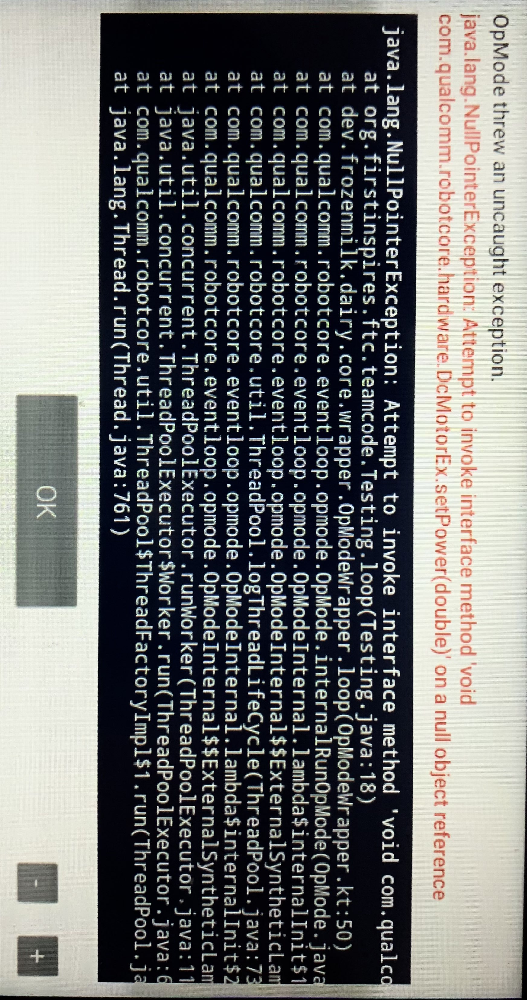

NullPointerException on initialization
NullPointerExceptions are common errors that occur when code runs in the wrong order. Here, we will cover how and why NPEs happen in general, as well as some common FTC-specific issues.
Ingredients
- A limited knowledge of Java.
- A desire to learn, debug, or solve problems!
Quick Links: Common Issues
Hardware Devices in OpModes Hardware Devices in External Classes BlocksCompanion hardwareMap and telemetry
The Recipe
What does it look like?
The general format of the error is:
java.lang.NullPointerException: Attempt to invoke [...] on a null object reference
On the Driver Station, you may see a stacktrace similar to this:

Why does this happen?
First, we need to understand more about how Java works a little more in depth.
This section is a little lengthy, feel free to scroll below for the solution.
When we program in Java, we have expressions, which have a certain type. The type tells us about the properties of said expression.
This lets us add ints, set the power of a DcMotor, or check if a boolean is true!
Type systems also give us a degree of validity; we can't add servos to booleans.
The following is a very generalized description with oversights, but is sufficient for conceptual understanding.
In Java, there are two categories of types:
- Primitive Types
- Primitives are not objects, and do not have methods, only a value.
- Primitives are passed by value.
int,double, andboolean, are examples of primitives.
- Reference Types
- All types that extend
Objectare passed by reference, and hence, reference types. - All objects are passed by reference.
classes,interfaces,enums, arrays
- All types that extend
What does it mean to pass/store an object by value or reference?
Storing by Value:
- You are storing the actual value of the variable in memory.
- This means that when you assign one variable to another, a copy of the value is made.
- Changes to one variable do not affect the other.
int bobMoney = 20; int jeffMoney = bobMoney; // "jeffMoney" gets the value of "bobMoney", not a reference to "bobMoney" jeffMoney = 10; // changing "jeffMoney" does not affect "bobMoney" System.out.println(bobMoney); // 20Storing by Reference:
- You are storing a reference or memory address to the location where the actual data is stored.
- This means that when you assign one variable to another, they both point to the same memory location.
- Changes to one variable will affect the other because they both refer to the same data.
Person bob = new Person("bob", 18); Person anon = bob; // "anon" now refers to the same object as "bob" System.out.println(bob.getAge()); // will print 18 anon.setAge(21); // changing "anon" also changes "bob" System.out.println(bob.getAge()); // will print 21
null really refers to a null reference. This means any Object can have a null value.
Any uninitialized Object has no reference to point to; a null reference, or null.
NPEs occur when you try to use the typed properties of an object while it points to nothing.
This is so no undefined behavior occurs.
Java does not provide any means of "null-safety", and so it is the responsibility of the programmer to check for and handle potential null values.
FTC specific examples include trying to access the hardwareMap at instantiation, or just never assigning a value to a HardwareDevice.
hardwareMap and telemetry
It is important to note that NPEs are a very common, generic exception. However, the most common causes in FTC are due to the way hardwareMap and telemetry work. This section will detail the way that hardwareMap and telemetry work, why it's so easy to get them wrong, and how to fix it.
Whenever you write an OpMode, you use the telemetry and hardwareMap objects all the time!
// Instantiate drive motors
DcMotor frontLeft = hardwareMap.get(DcMotor.class, "frontLeft");
A generic example of using hardwareMap.
However, these objects have to come from somewhere, and in fact they do! They are both created within the OpMode itself. This means that you cannot directly access hardwareMap OR telemetry from outside an OpMode. This is a very common issue, and typically the biggest cause of NullPointerExceptions.
There is actually even another layer to this - while telemetry can be accessed anywhere within the OpMode, hardwareMap must only be accessed after the OpMode has started running.
Technical details: hardwareMap and telemetry are both from OpModeInternal (which both OpMode and LinearOpMode inherit). telemetry is instantiated on class construction, whereas hardwareMap is instantiated as soon as the OpMode is run.
Common Issues: Hardware Devices in OpModes
Hardware devices (anything that requires hardwareMap) are NOT accessible at class instantiation; that is, one cannot do the following:
@TeleOp
public class Testing extends OpMode {
private DcMotor motor = hardwareMap.get(DcMotor.class, "motor"); // this will cause a NullPointerException because hardwareMap isn't defined until init()!
@Override
public void init() { } // it's always a red flag if the init is empty! TH=
@Override
public void loop() {
motor.setPower(1.0);
}
}
Hardware devices only start to become accessible during and after init() in OpModes and within runOpMode() in LinearOpModes.
Therefore, if you're using an OpMode, you should be instantiating (creating) your hardware devices in init(). In a LinearOpMode, hardware devices should be instatiated in runOpMode(), and before waitForStart().
@TeleOp
public class Testing extends OpMode {
private DcMotor motor;
@Override
public void init() {
motor = hardwareMap.get(DcMotor.class, "motor"); // hardwareMap is defined here, so this won't cause an error!
// any other hardware device instantiations should also go here
}
@Override
public void loop() {
motor.setPower(1.0);
}
}
Common Issues: Hardware Devices in External Classes
Let's say you have a separate class where you want to access either hardwareMap or telemetry, or both. For example, we might have an Arm class that controls a simple rotating arm.
public class Arm {
private DcMotor armMotor;
/**
* Tilts the arm using raw motor power.
* @param power The motor power.
*/
public void tilt(double power) {
armMotor.setPower(power);
}
}
Now, you might notice in the above code that the value of armMotor is never set to anything. This will cause a NullPointerException! To prevent this, we need to assign armMotor a value. Typically, we'd do this using hardwareMap. However, if you recall, hardwareMap isn't defined outside of OpModes! So, what to do? Well, the idea is actually rather simple: when creating an Arm, we'll ask for an instance of hardwareMap that we can then use to define armMotor. Since Arm is created in an OpMode, hardwareMap will be defined!
public class Arm {
private DcMotor armMotor;
/**
* @param hardwareMap The hardwareMap instance from an OpMode.
*/
public Arm(HardwareMap hardwareMap) {
armMotor = hardwareMap.get(DcMotor.class, "armMotor");
}
/**
* Tilts the arm using raw motor power.
* @param power The motor power.
*/
public void tilt(double power) {
armMotor.setPower(power);
}
}
Now that we have our Arm class, this is what an OpMode would look like:
@TeleOp
public class ArmTest extends OpMode {
private Arm arm;
@Override
public void init() {
arm = new Arm(hardwareMap); // we still need to instantiate the arm in init(), since hardwareMap isn't defined before then
}
@Override
public void loop() {
arm.tilt(gamepad1.right_trigger - gamepad1.left_trigger); // use triggers to move arm up and down
}
}
We can also do the same thing for telemetry:
private Telemetry telemetry;
public Arm(HardwareMap hardwareMap, Telemetry opModeTelemetry) {
armMotor = hardwareMap.get(DcMotor.class, "armMotor");
telemetry = opModeTelemetry;
}
...and we now have an Arm class that can access both hardwareMap and telemetry!
Common Issues: BlocksCompanion hardwareMap and telemetry
Remember when we mentioned how hardwareMap and telemetry aren't defined outside of an OpMode? While this is true, there is still a way you can make your code think it can access hardwareMap and telemetry. Doing this will cause all of the NullPointerException problems with none of the helpful red squiggly lines.
package org.firstinspires.ftc.teamcode;
import static org.firstinspires.ftc.robotcore.external.BlocksOpModeCompanion.hardwareMap;
import static org.firstinspires.ftc.robotcore.external.BlocksOpModeCompanion.telemetry;
import com.qualcomm.robotcore.hardware.DcMotor;
public class Arm {
private DcMotor armMotor;
public Arm() {
armMotor = hardwareMap.get(DcMotor.class, "armMotor");
}
/**
* Tilts the arm using raw motor power.
* @param power The motor power.
*/
public void tilt(double power) {
armMotor.setPower(power);
telemetry.addData("Arm tilt power", power); // log tilt power in telemetry
}
}
What's wrong here? You might notice how our constructor for Arm no longer has a parameter for hardwareMap, yet we can still use hardwareMap somehow! Similarly, we are also using telemetry without ever even defining it! This bug is incredibly sneaky. Normally, we don't pay a ton of attention to imports, but here the imports are exactly what matter. Let's isolate the important imports:
import static org.firstinspires.ftc.robotcore.external.BlocksOpModeCompanion.hardwareMap;
import static org.firstinspires.ftc.robotcore.external.BlocksOpModeCompanion.telemetry;
These two imports are incredibly nasty. The hardwareMap and telemetry above are not actually meant for us, but actually for Blocks users! This is, behind the scenes, what Blocks OpModes use. Since we are not using Blocks, these imports don't work. Luckily, although the bug is nasty, the solution is rather simple - get rid of the imports and pass hardwareMap and telemetry in like we did in the previous section!
Last updated: 2024-11-27